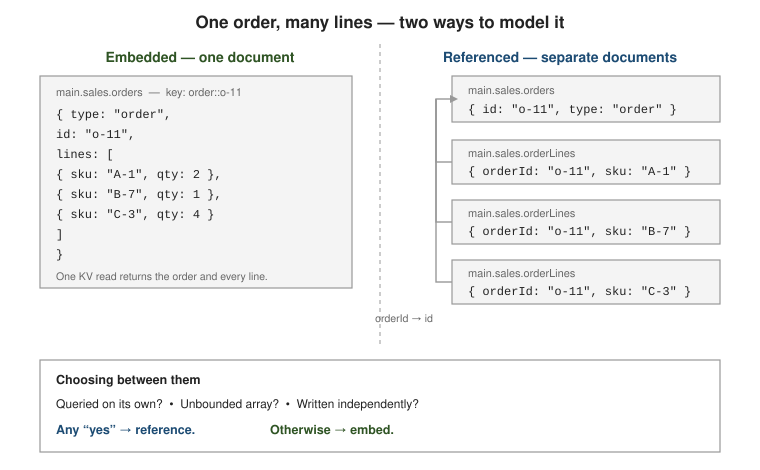

Document-oriented data modeling
|
This content was generated with the assistance of AI and should be verified against the official documentation before being relied on in production. |
Couchbase stores each record as a JSON document addressed by a key inside a
bucket / scope / collection keyspace. There is no
CREATE TABLE step: the shape of a document is an application decision, and the central question is how to
spread related data across documents — what to embed, what to link by key, and how much to copy.
Embed or reference
The guiding principle is data that is accessed together is stored together. Embedding a related object nests it in the same document, so a single key-value read returns everything and a single write updates it atomically. Referencing keeps the related object in its own document under its own key, joined later with SQL++ or a follow-up KV lookup.

// embedded: the address is only ever read as part of the user
// collection: main.users.profiles key: user::u-1
{
"type": "user",
"name": "Ada",
"address": { "street": "1 Loom St", "city": "Turin", "zip": "10100" }
}
// referenced: each order is its own document, linked by userId
// key: user::u-1
{ "type": "user", "name": "Ada" }
// key: order::o-11
{ "type": "order", "userId": "u-1", "total": 42.00 }
// key: order::o-12
{ "type": "order", "userId": "u-1", "total": 19.00 }
Decide with these factors (the document data model):
-
Bounded vs. unbounded arrays. An embedded array that can grow without limit eventually approaches the hard 20 MB per-document ceiling and slows every read of the parent even when the array is not needed. Embed only arrays with a known, small upper bound.
-
Read/write ratio. Embedding favours read-heavy access — one round trip, no join. Referencing favours data written independently of the parent, or updated far more often than it, so a large document is not rewritten on every change.
-
Single-document atomicity. A KV mutation of one document — whole-document or a sub-document path — is atomic without a transaction, so fields that must stay mutually consistent are safer embedded. Spanning documents needs a multi-document transaction.
-
Queried on its own? If the child is frequently filtered, sorted or paged by itself, it wants to be its own document with its own indexes.
Worked example: the shop model
The running example applies those factors to an online shop. A customer places many orders; an order has a handful of lines; each line refers to a product from the catalogue.
The decisions, and the reason for each:
| Relationship | Modelling | Why |
|---|---|---|
order and its lines |
Embedded array |
Always read and written together; bounded (a basket has tens of lines, not millions); one |
line and product |
Reference |
The catalogue changes independently; the line must keep the price paid, not today’s price, so the copy is the correct data, not a cache. |
customer and orders |
Reference |
The number of orders per customer is unbounded and orders are queried and paged on their own. |
category and parent |
Reference |
A tree; walked with a recursive query (see Querying with SQL++). |
One order of the dataset shows the result. The keys follow the type::id pattern, the order carries a
customerId key and embeds its lines, and every line carries the productId reference together with the sku
and price it was sold at:
// key: order::o-1001 (collection shop.sales.orders)
{
"type": "order",
"customerId": "customer::c-1",
"status": "PAID",
"placedAt": "2026-03-02T09:15:00Z",
"lines": [
{ "productId": "product::p-1", "sku": "KB-100", "qty": 1, "price": 89.90 },
{ "productId": "product::p-2", "sku": "MS-200", "qty": 2, "price": 24.50 }
]
}
Because the lines are embedded, rendering an order never needs a join, and the document stays small — the
ENCODED_SIZE of the first three orders is a few hundred bytes:
SELECT META(o).id AS id, ENCODED_SIZE(o) AS bytes, ARRAY_LENGTH(o.lines) AS n
FROM shop.sales.orders o ORDER BY id LIMIT 3;
-- [{"id":"order::o-1001","bytes":235,"n":2},{"id":"order::o-1002","bytes":234,"n":2},
-- {"id":"order::o-1003","bytes":169,"n":1}]
The reference to the customer is resolved only when the customer’s data is needed, with a lookup join on the
key (ON KEYS), and the total is computed from the embedded lines:
SELECT META(o).id AS id, c.name AS customer,
ROUND(ARRAY_SUM(ARRAY l.qty * l.price FOR l IN o.lines END), 2) AS total
FROM shop.sales.orders o JOIN shop.sales.customers c ON KEYS o.customerId
WHERE o.status = "OPEN" ORDER BY id;
-- [{"id":"order::o-1002","customer":"Ada Lovelace","total":278.98},
-- {"id":"order::o-1005","customer":"Grace Hopper","total":24.5},
-- {"id":"order::o-1007","customer":"Alan Turing","total":137.96}]
The copy on the line is verifiable against the catalogue: joining the lines of one order back to their products shows the price paid next to the current price, and they are free to diverge.
SELECT p.sku, p.price AS current_price, l.price AS price_paid
FROM shop.sales.orders o USE KEYS "order::o-1004" UNNEST o.lines l
JOIN shop.sales.products p ON KEYS l.productId;
-- [{"sku":"KB-100","current_price":89.9,"price_paid":89.9},{"sku":"CB-500","current_price":9.99,"price_paid":9.99}]
Key-based relationships and cardinality
Couchbase has no foreign keys and no server-enforced referential integrity. A relationship is just a
document key — or an array of keys — stored on another document, resolved with USE KEYS, an ANSI
JOIN on META().id, or a KV get. Deterministic keys such as order::<uuid> or
user::<uuid>::cart let the application compute the key of a related document instead of querying for
it (document data model).
| Cardinality | Typical modelling |
|---|---|
1:1 |
Embed (user + preferences), unless the sub-part is large and rarely read — then a separate document under a derived key such as |
1:few (bounded) |
Embed as an array — an invoice and its handful of line items. |
1:many |
Store the parent key on each child document ( |
many:many |
An array of keys on one side, or a dedicated link document per edge when the relationship itself carries data (a role, a grade, a joined-at timestamp). |
// many:many via a link document, one per edge, in its own collection
// key: enrol::std-1::c-1
{ "type": "enrolment", "studentId": "std-1", "courseId": "c-1",
"grade": "A", "enrolledAt": "2026-02-01T00:00:00Z" }
High-cardinality relationships — followers, activity feeds, audit trails — are never embedded in full.
Model each edge or event as its own document in its own collection, index the parent key, and page through
the matches. Keep a followerCount and a small followerSample array on the profile for display,
refreshed on write.
SELECT f.follower FROM main.social.follows AS f WHERE f.followee = "u-1" ORDER BY f.createdAt DESC LIMIT 50 OFFSET 0;
Normalization, denormalization and collections
The relational baseline stores each fact once and rebuilds rows with joins — see SQL Normalization. The document model frequently does the opposite: it copies a few slow-changing fields into the documents that read them so the join disappears at read time. The same trade-off drives MongoDB Schema Design.
The price of duplication is write-time consistency. When a copied value changes, every copy must be updated and readers can briefly see a stale copy. Duplicate only fields that rarely change (a name, a city, a price at time of sale) and keep one clearly identified source of truth.
// denormalized: product name copied onto each order line so rendering an // order needs no join; a background job refreshes copies on rename. // https://docs.couchbase.com/server/current/learn/data/document-data-model.html UPDATE shop.sales.orders AS o SET l.name = "Standing Desk" FOR l IN o.lines WHEN l.sku = "A-1" END WHERE ANY l IN o.lines SATISFIES l.sku = "A-1" END;
Collections are a first-class modeling tool. A collection groups documents of one entity type, the way a
table does, and is the unit of RBAC, indexing and much SQL++ syntax. Prefer one collection per entity type
(users, orders, orderLines) inside a meaningful scope over a single type-tagged heap in the
bucket’s _default collection
(scopes and collections).
Schema versioning. Even with collections, keep a type discriminator and a schemaVersion (or
_v) field on every document so the application can read old and new shapes side by side and migrate
lazily on write, or in a batched UPDATE.
{ "type": "user", "schemaVersion": 3, "name": "Ada", "emails": ["a@x.io"] }
// batch migration: fold a scalar email into an array, then bump the version UPDATE main.users.profiles SET emails = [email], schemaVersion = 2 UNSET email WHERE schemaVersion < 2;
Mapping objects to documents
An application object becomes a document through the SDK’s serializer (Jackson by default in the Java SDK). A Java record with an enum and a decimal maps without extra code, and the round trip shows what JSON can and cannot carry:
enum Status { OPEN, PAID }
record Line(String sku, int qty, BigDecimal price) { }
record Order(String type, String customerId, Status status, String placedAt, List<Line> lines, int schemaVersion) { }
Order o = new Order("order", "customer::c-1", Status.OPEN, "2026-04-01T10:00:00Z",
List.of(new Line("KB-100", 1, new BigDecimal("89.90"))), 1);
collection.upsert("order::o-3000", o);
System.out.println(collection.get("order::o-3000").contentAsObject());
System.out.println(collection.get("order::o-3000").contentAs(Order.class));{"customerId":"customer::c-1","schemaVersion":1,"type":"order","lines":[{"sku":"KB-100","price":89.9,"qty":1}],"placedAt":"2026-04-01T10:00:00Z","status":"OPEN"}
Order[type=order, customerId=customer::c-1, status=OPEN, placedAt=2026-04-01T10:00:00Z, lines=[Line[sku=KB-100, qty=1, price=89.90]], schemaVersion=1]
Three modelling rules follow from it:
-
Enums become strings and field order is not preserved (the stored document has the keys in a different order than the record). Never depend on property order.
-
Numbers are JSON numbers: the
89.90was stored as89.9. SQL++ and the index service treat numbers as double-precision floating point, so exact money amounts belong in integer minor units (8990cents) or in strings, not in decimals that must compare exactly. The sample shop keepspriceas a number for readability; a production catalogue would not. -
Dates have no JSON type. Store ISO-8601 strings (
2026-04-01T10:00:00Z), which sort lexicographically in time order and are understood by the SQL++ date functions, or epoch milliseconds when arithmetic dominates. Atypefield and aschemaVersionon every document keep the Java type recoverable and migratable.
Schema evolution in practice
The schemaVersion migration shown earlier was run against a scratch copy of the shop customers to confirm it. Five customer
documents carried a scalar email at versions 1 and 2; one UPDATE with a version guard in its WHERE folds
the field into an emails array and bumps the version. The guard makes the statement idempotent: a second run
touches nothing.
UPDATE shop.sales.scratch
SET emails = [email], schemaVersion = 3 UNSET email
WHERE schemaVersion < 3
RETURNING META().id, emails, schemaVersion;
-- {"id":"customer::c-1","emails":["ada@example.com"],"schemaVersion":3} ... five documents, mutationCount 5
-- second run: mutationCount 0
A large keyspace should be migrated in batches (add a LIMIT through a keyed subquery, or iterate over key
ranges from the application) so that one statement does not hold the Query service for minutes, and the reader
code must accept both versions until the batch finishes. Lazy migration — upgrade a document when the
application next writes it — needs no batch at all and is usually the better default; the schemaVersion field
is what tells the reader which shape it has in hand.
Anti-patterns and when not to use Couchbase
-
Massive, unbounded arrays. An array that grows per user action (comments, events, followers) will hit the 20 MB document limit and degrade every read. Reference from the many side, or bucket fixed-size windows into separate documents.
-
Oversized documents carrying fields most reads never touch. Split the hot fields from the cold with a derived-key satellite document, or project narrowly in SQL++ and fetch sub-document paths over KV.
-
One giant
_defaultcollection. A single heap keyed only by atypefield loses per-entity RBAC and forces every index to carry atypepredicate. Create scopes and collections per entity. -
Unindexed case-insensitive lookups.
WHERE LOWER(email) = "ada@x.io"without a matching functional index forces a primary scan. Create the index on the same expression (CREATE INDEX).
CREATE INDEX idx_email_ci ON main.users.profiles(LOWER(email)); SELECT META().id FROM main.users.profiles WHERE LOWER(email) = "ada@x.io";
The difference is visible in the plan. On the shop customers, where one address is stored as
Grace@Example.com, an equality on the raw field plans a full primary scan and finds nothing, while the
expression index serves the lowercase predicate as a covered index scan (no Fetch at all) and finds the row:
EXPLAIN SELECT META().id FROM shop.sales.customers WHERE email = "grace@example.com";
-- PrimaryScan3(#primary) -> Fetch -> Filter -> InitialProject (result: [])
EXPLAIN SELECT META().id FROM shop.sales.customers WHERE LOWER(email) = "grace@example.com";
-- IndexScan3(idx_cust_email_ci, covering) -> Filter -> InitialProject (result: [{"id":"customer::c-3"}])
Couchbase is the wrong fit when the workload is overwhelmingly multi-statement transactional over a rigid, well-known relational shape with strict cross-entity integrity constraints, or leans on ad-hoc joins and aggregation across many equally important normalized entities with no dominant access path. Couchbase supports distributed ACID transactions, but a schema that needs them on most writes is signalling that a relational engine — or a different embed/reference split — would serve better. For the relational baseline see SQL Reference; continue with Querying with SQL++.